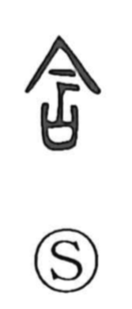

岸

Uncategorized
Kun: kishi | On: gan
shore ・ bank
Explanation
岸 is a phono‑semantic character. The element 厂 sketches an inclined cliff or escarpment, while 干 functions as the phonetic and at the same time evokes the idea of a riverbank. Combined, they indicate a place where a mountain’s side drops sharply to meet water—a shore or bank (kishi). Related forms differentiate nearby features: 岩 names large rocks appearing on a mountain’s slope, 崖 denotes a precipice built up from layers of earth or clay, and 涯 refers to a margin facing a river or the sea.